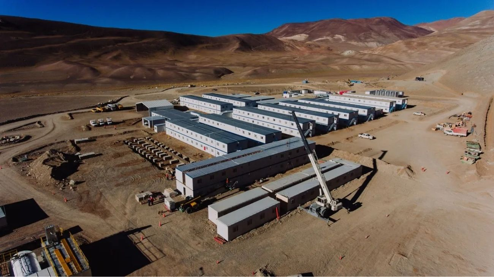

Argentina se posiciona en el mapa minero mundial con una inversión histórica de USD 18.000 millones
La alianza entre las compañías BHP y Lundin Mining oficializó un ambicioso plan de explotación en San Juan que transformará la matriz exportadora nacional.

El sector minero argentino ha recibido un impulso sin precedentes tras la confirmación de una inversión de 18.000 millones de dólares destinada a la explotación de cobre, oro y plata en la provincia de San Juan. Este mega proyecto, denominado Vicuña, surge de la unión estratégica entre la firma australiana BHP y la canadiense Lundin Mining, quienes planean desarrollar los yacimientos Josemaría y Filo del Sol.
La oficialización de estas cifras supera las expectativas previas del mercado y posiciona al distrito sanjuanino co0mo uno de los polos productivos de metales básicos y preciosos más importantes de todo el planeta.
El cronograma de trabajo estipula una fase inicial de desembolsos por 7.000 millones de dólares que se ejecutarán entre los años 2027 y 2030, periodo en el que se espera alcanzar la primera etapa de producción. Durante el presente año y el próximo, la compañía se enfocará en las tareas de ingeniería de detalle, la adquisición de maquinaria pesada y la adecuación de la infraestructura logística necesaria, incluyendo campamentos y caminos de acceso.
Este desarrollo por etapas busca minimizar los riesgos técnicos y asegurar un crecimiento predecible de la actividad en un entorno de alta complejidad geográfica.
Una vez que el complejo esté plenamente operativo, se estima que Argentina volverá a ser un actor clave en el mercado del cobre, mineral esencial para la transición energética global. Las proyecciones indican una producción anual promedio de casi 400.000 toneladas de cobre y volúmenes significativos de oro y plata durante los primeros veinticinco años de vida útil de la mina. Este flujo constante de minerales no solo permitirá al país generar divisas de manera sostenida, sino que también integrará a la Argentina en el top cinco de las mayores operaciones mineras a cielo abierto del mundo.
Más allá del impacto macroeconómico, el plan oficializado por Vicuña pone un fuerte énfasis en la contratación de mano de obra local y el desarrollo de proveedores regionales en la zona de Cuyo. La adhesión al régimen de incentivos para grandes inversiones ha sido el marco legal determinante para asegurar la llegada de estos capitales extranjeros de largo plazo. Con este paso, se espera una revitalización profunda de la infraestructura productiva provincial y una mejora sustancial en los niveles de empleo directo e indirecto vinculados a la industria extractiva de última generación.